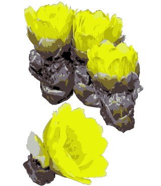

梅が咲き、土の中の虫も動き出す？跡形（想い）を追いかけない。

『木道に踏み砕枯れた霜の花』
冬真っ盛りと思えるこの時期、木漏れ日の中、座禅を組んでたたずむ姿は豊かな味わいです。
僅かにこれだけの体を持ったこの道具（心身）は、あらゆるものを吸収して、何も残さないできれいさっぱり次のものに移る。自由自在です。
有るものが只有る。全てのものは、人のためにあるわけではない。考え方や用い方によって良し悪しを云われるものとは違うからいいじゃないですか。
『寒き日に温もり告げる節分草』
増えもしなければ減りもしない、傷もつかない汚れもしなければきれいになるというものでもないのに、時期がくれば、花は咲き、香り漂う。
花の大きなものをトウロウバイ。花の中心部が暗色でなく、すべて黄色のものをソシンロウバイとよび、珍重される。アメリカ原産のクロバナロウバイは、花は暗かっ色で5月に咲く。雄ずいは10～30本。葉はだ円形または長だ円形となり、先端はとがり、基部は円形または広いくさび形で全縁。開花時に葉は3～6cmになり、展開している。
風のない朝、梅の木近くを通ると甘い香りが『ふわっ』と漂う。季節の移り替わり、春という力強さが感じられます。私は梅干は嫌いですが、庭に植えるなら実の成る梅を選ぶ。
『降る香り見上げた空に梅の花』
普段、写真を撮って満足してしますが、絵を描いて観ると造形や色合いに心奪われます。
『筆を取り年越し草とにらめっこ』
『よくみてとちょっと早咲き種付花』
『畦道にナズナ花穂を突き上げし』
『葉は未だ緑に非ず乙女花』

『早春や大地の目覚めふきあがる』
私の娘の小学校に植えられていて見に行きたいのですが、近頃物騒で、正門以外の入り口は門が閉ざされていて遠回りしなくては行けません。
『ここかしこ萌える若草乗り合わす』
芽吹いた植物たちを見て、その経過を見に草むらや林の中をうろつきます。
『草むらで起きろと種を踏みつけし』
初めて見て触れた蕾は不思議なドキドキ感がありました。生け花でよく使われる。水に浸けておけば切った枝から根を出すので増やしやすい。低木ですが、成長も早い。木の芽や蕾は冬の間からしっかり開花の準備をしている。
『冬だとて時をかけ出で木の芽かな』
トップへ戻る
▼霜の花
フクジュソウは林床に生える多年草。根はかさ状に地中深くにはって越冬し、雪どけと同時に開花する。茎は高さ10～30cm。葉は3～4回羽状に細かく裂け、小形も拓葉がある。下方の葉は葉柄のみでさや状。枝先に径3～4cmの黄色花を1個つける。花弁は広倒披針形で20～30枚。がく片は暗紫色を帯びた卵形で5～8枚。雄ずい、雌ずいともに多数。花は日光下で開き、曇天下で閉じる。正月の鉢花としても愛好され、元日草の別名もある。『木道に踏み砕枯れた霜の花』
▼僅かに春
ザゼンソウは湿った林の下や湿原に生える多年草。地下茎は地中深くにあり太く短い。太いひも状の根が出る。葉は卵心形または卵状長だ円形。花茎は地中にあって長く、苞は地表に位置し、広だ円形で深いポート状、暗紫色。花序はだ円体で短い柄があり、苞に包まれる。花被は4枚、長さ1.5mm、雄ずいは4本。雌花は下部が花軸にうもれる。冬真っ盛りと思えるこの時期、木漏れ日の中、座禅を組んでたたずむ姿は豊かな味わいです。
僅かにこれだけの体を持ったこの道具（心身）は、あらゆるものを吸収して、何も残さないできれいさっぱり次のものに移る。自由自在です。
▼誰のためにもない
セツブンソウは、日光のさしこむ疎林も中などに生える多年草。根生葉は5～10cmの葉柄があり五角形で、掌状に深く切れ、裂片はひし状卵形でさらに羽状に細かく裂ける。5～15cmの花茎をのばし、茎頂に直径2cmの花を1個つける。総苞は無柄で深く切れ込み、裂片は線形で輪状に配列する。がく片は花弁状で5枚、長さ10～15mm。セツブンソウは節分草の意で、早春に花が咲くところからその名がつけられた。石灰岩地を好み２月下旬～
３月中旬に花が咲く。有るものが只有る。全てのものは、人のためにあるわけではない。考え方や用い方によって良し悪しを云われるものとは違うからいいじゃないですか。
『寒き日に温もり告げる節分草』
▼全てをゆだねて
陰暦の１２月（臘月）、梅の香りがするところからロウバイという。増えもしなければ減りもしない、傷もつかない汚れもしなければきれいになるというものでもないのに、時期がくれば、花は咲き、香り漂う。
花の大きなものをトウロウバイ。花の中心部が暗色でなく、すべて黄色のものをソシンロウバイとよび、珍重される。アメリカ原産のクロバナロウバイは、花は暗かっ色で5月に咲く。雄ずいは10～30本。葉はだ円形または長だ円形となり、先端はとがり、基部は円形または広いくさび形で全縁。開花時に葉は3～6cmになり、展開している。
▼春という力
ウメは庭などに生える落葉小高木。枝は分枝する。葉は互生し、倒卵状披針形～倒披針形、先端はするどくとがり、基部はくさび形。長さ5～10cm、へりに細かい重鋸歯がある。表面は緑色でやや光沢があり、裏面は淡緑色。中肋にかっ色の毛がある。葉柄の基部に密腺が2～4個つく。花は散形花序に1～3個つく。果実は直径4～5cm。中国原産。風のない朝、梅の木近くを通ると甘い香りが『ふわっ』と漂う。季節の移り替わり、春という力強さが感じられます。私は梅干は嫌いですが、庭に植えるなら実の成る梅を選ぶ。
『降る香り見上げた空に梅の花』
▼春の七草
ミドリハコベ（ハコベ）は畑地、人家のまわり、道路沿いなどに生える2年草。茎は下部が地をはい、上部は斜上に立ち、長さ10～30cmになり方側に1列に毛がある。葉は対生し、卵形～広卵形、鋭頭で上方は無柄である。ヘリには鋸歯がなく、基部は円形。花は枝先に集散花序をつくる。花弁は白色。雄ずいは8～10本。花柱3本。花びらは2深裂し、
5枚の花びらが10枚のように見える。果実は長卵形。春の七草で親しまれ、小さいながら世界中に分布する。普段、写真を撮って満足してしますが、絵を描いて観ると造形や色合いに心奪われます。
『筆を取り年越し草とにらめっこ』
▼早咲き
タネツケバナは水田や水辺、湿地に生える2年草。茎はふつう暗紫色を帯び、直立して高さ10～30cmになる。葉は7～10枚の羽状複葉で、小葉は卵形～広卵形で、頂小葉は少し大きく、小さな歯牙や欠刻がある。枝先に総状花序を出し、10～20個の白色花をつける。花の全盛期が稲の種を植えつける時期に重なることから名が付いた。細長い種房を付ける。『よくみてとちょっと早咲き種付花』
▼雨上がり
ナズナは田や畑、人家のまわり、道端などの日当たりのよい所に生える2年草。茎は高さ10～40cm。根生葉は羽状に深く切れ込み、基部に耳のあるものが多い。茎葉は披針形で基部は耳状となり茎を抱く。茎頂に総状花序を出し、多数の白色の小花をつける。花弁4枚。花後花軸がのびる。果実は倒三角形で先端が浅く広くへこむ。花柱は短い。種子は1果中に20～25個含まれる。果実の形が三味線のばちに似ているところからペンペングサともいう。春の七草の一つで山菜ともする。『畦道にナズナ花穂を突き上げし』
▼賑わい
ヒメオドリコソウは原野の日の当たる荒地や道ばたに生える2年草で、しばしば群生している。茎は四角形で、下部ははい、上部は直立site10～30cmの高さになる。葉は対生し、心円形または心形状の卵形で、へりには鈍いきょしがある。花は上部の葉腋に咲き、花冠は紅紫色。花より紅紫色に染まった葉がよく目立つ。ヨーロッパ原産で明治の中ごろに帰化した。この花の名前を『ヒメリコソヤコソエンヤラヤノヤオットットノトブヒィンブヒィン』と書いた絵本があり、子供は楽しんで覚えた。『葉は未だ緑に非ず乙女花』
▼ふきあがる
フキはやや湿った原野、丘陵、山麓、谷間などに生える多年草。根茎は短く、匍匐枝をのばして繁殖する。地上茎はない。葉は根茎から出て長い葉柄をもち、長さ20～50cm。葉身は腎円形でへりに低い歯牙がある。雌雄異株。つぼみを"フキのとう"といい、葉柄とともに食す。アキタブキは葉柄の長さ2mに達するもので、秋田では砂糖漬けに加工。『早春や大地の目覚めふきあがる』
▼枝分かれ
栽培されている落葉低木。枝は3本ずつ分かれる。葉は互生し、広披針形～披針形で、長さ8～15cmあり、先端はとがり、裏面はしろっぽく、質はうすく全縁である。花は新しい枝に、黄色の頭状花が下向きにつく。高さ1～3m。中国・ヒマラヤ原産。関東南部以西では野生化している。樹皮は強く、和紙の原料に使う。花の香りは強い。私の娘の小学校に植えられていて見に行きたいのですが、近頃物騒で、正門以外の入り口は門が閉ざされていて遠回りしなくては行けません。
『ここかしこ萌える若草乗り合わす』
▼迷い道
マンサクは山地に生える落葉低木～高木。葉は互生し、ひし状円形～扇状円形で、長さ7～15cm、幅4～10cmあり、下面脈状に星状毛があり、縁には中央から上部にあらい鋸歯がある。花弁には黄色で線形、がく片は4枚。材がねばりづよいので結さく用にもちいられ、このほかカンジキも作る。茶花に用いる。明るい林の中で花びらが金糸の塊のように輝くマンサク。ろまんちっく村に植えられている。芽吹いた植物たちを見て、その経過を見に草むらや林の中をうろつきます。
『草むらで起きろと種を踏みつけし』
▼柔らかい
ネコヤナギは平地の川沿いに生え、雌花穂・雄花穂ともに銀白色の長毛をかぶる。葉は互生し、長だ円形で長さ5～12cm、バッコヤナギよりやや細い。おしべ1本。初めて見て触れた蕾は不思議なドキドキ感がありました。生け花でよく使われる。水に浸けておけば切った枝から根を出すので増やしやすい。低木ですが、成長も早い。木の芽や蕾は冬の間からしっかり開花の準備をしている。
『冬だとて時をかけ出で木の芽かな』